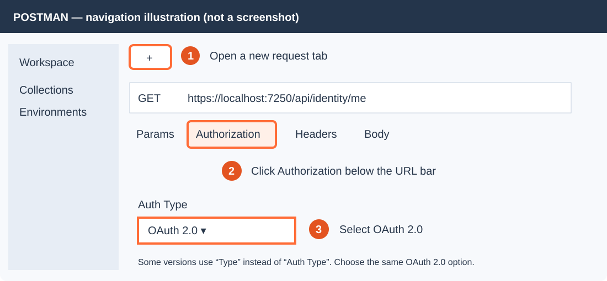
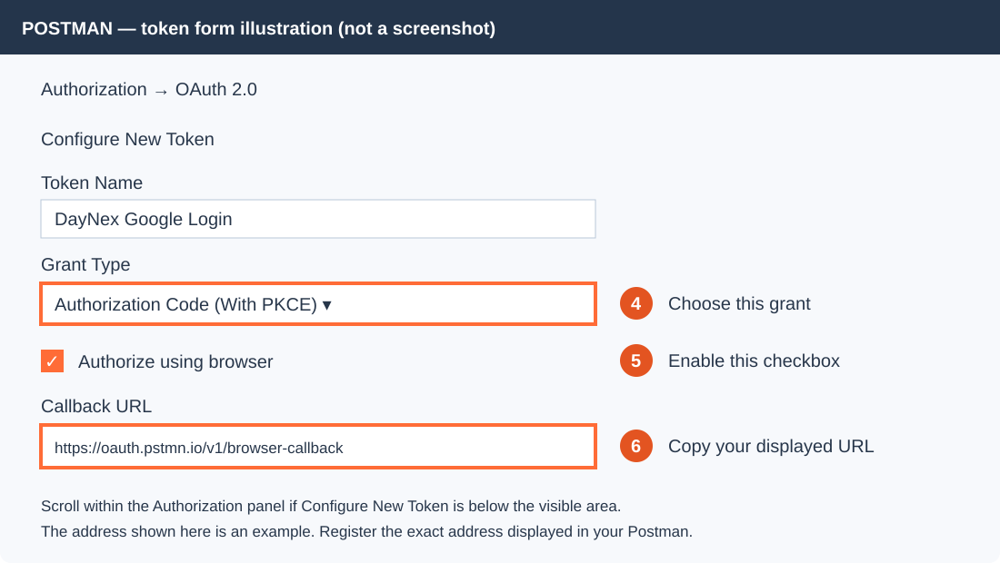
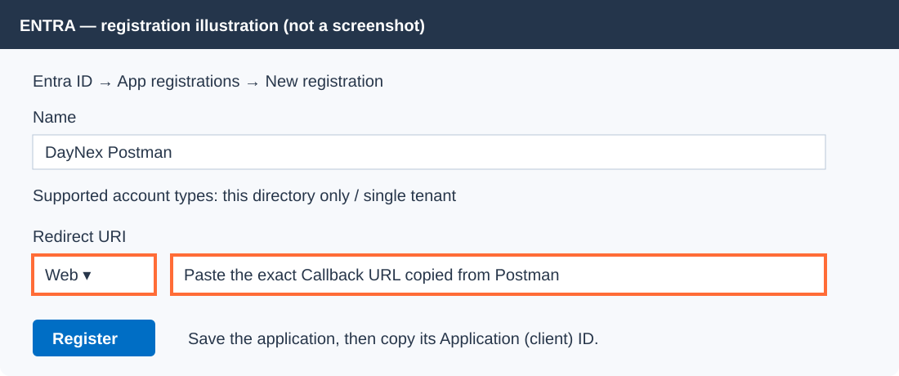

DayNex: test Google login through Entra
A visual companion for configuring the portals and testing your local backend. Complete the cards in order. Reuse existing resources when their settings match.
Google sign-in → Entra access token → Gateway validation → Identity API + database
Official screenshots below load from Microsoft over the internet. Other screen illustrations are clearly marked as examples; portal wording may vary. No real credentials are included.
1. Select your customer tenant
Where: Microsoft Entra admin center → Entra ID → Overview.
- Use the top Settings gear → Directories + subscriptions to switch into your External customer tenant.
- If one does not exist, open Overview → Manage tenants → Create → External. Follow the subscription, tenant name, domain, and region prompts.
- In the customer tenant Overview, record the Tenant ID and Primary domain. If the domain is
daynexcustomers.onmicrosoft.com, the subdomain is daynexcustomers.
 Official Microsoft screenshot: choose External.
Official Microsoft screenshot: choose External.
 Official Microsoft screenshot: find your tenant identifiers.
Official Microsoft screenshot: find your tenant identifiers.
Reference: Create an external tenant. Customer identities and Azure SQL resources can belong to separate directories.
2. Register DayNex API
Where: Entra ID → App registrations → New registration.
- Name: DayNex API. Choose this directory only / single tenant. Leave Redirect URI empty. Click Register.
- Copy Application (client) ID from Overview. Call it API_CLIENT_ID.
- Open Expose an API → Add Application ID URI. Save
api://API_CLIENT_ID, replacing the placeholder. - Click Add a scope and use the form below.
- Open Manifest. In the existing
api object, set requestedAccessTokenVersion to 2 and Save.
Illustration — DayNex API / Add a scope
Scope name
access_as_user
Who can consent
Admins only
Admin consent display name
Access DayNex as the signed-in user
Admin consent description
Allow this application to call DayNex for the signed-in user.
State
Enabled
Add scope Official Microsoft example. Its application and scope names differ from DayNex; use the values above.
Official Microsoft example. Its application and scope names differ from DayNex; use the values above.
References: App registration, Expose an API.
3. Register the Postman test client
This step only prepares the test client. Do not click Get New Access Token yet: Google and the user flow are configured in steps 4–5.
3A. Find Authorization in Postman
- Open Postman desktop and enter a workspace.
- Click the + beside the request tabs. Alternatively use New → HTTP Request.
- Enter
https://localhost:7250/api/identity/me in the URL bar. You do not need to send it yet. - Below the URL bar, click Authorization.
- Open the Auth Type dropdown (called Type in some versions) and select OAuth 2.0.

Navigation illustration: follow the orange numbers. These local images work offline.
3B. Find and copy the callback address
- Scroll down within the Authorization panel to Configure New Token. Expand it if collapsed.
- Token Name: DayNex Google Login.
- Grant Type: Authorization Code (With PKCE).
- Enable Authorize using browser.
- Find the Callback URL field and copy its complete address. Keep this request tab open for step 7.

Token form illustration: the callback shown is an example; copy the exact value from your application.
Verified field names and browser callback behavior: Postman OAuth documentation. These are explanatory illustrations, not screenshots of your installed version.
3C. Paste that callback into Entra
Where: customer tenant → Entra ID → App registrations → New registration.

The callback links this Entra registration to Postman's browser login.
- Name: DayNex Postman. Choose single tenant. Select Web for Redirect URI and paste the exact Postman callback. Click Register.
- Copy its Application (client) ID as POSTMAN_CLIENT_ID.
- Open API permissions → Add a permission → My APIs → DayNex API → Delegated permissions → access_as_user → Add permissions.
- Click Grant admin consent for your tenant → Yes. Check the permission is Granted.
- Open Certificates & secrets → Client secrets → New client secret. Give it a short expiry. Copy its Value immediately, not its Secret ID. Store it in Postman Vault.
Illustration — two different application IDs
DayNex API client IDUsed as backend Entra:Audience
DayNex Postman client IDUsed as OAuth Client ID in Postman
If My APIs does not show DayNex API, add your administrator account under Owners in both registrations.
4. Connect Google — screen by screen
Where: Google Cloud Console. Sign in with your Google account.
These are real Google Cloud screenshots published by SHOPLINE in its setup guide, plus an official Google screenshot. They are reference screens, not your account. Ignore their sample application names and URLs: enter the DayNex values written below. Images require internet access; click an image to open it at full size.
4A. Create or select your Google Cloud project
Click the project selector beside the Google Cloud logo at the top. Choose New Project. Enter DayNex Login as Project name, choose your organization/location if applicable, then click Create. Use the project selector again to select the new project.
 Google Cloud screenshot: New Project. Enter DayNex Login, rather than the sample name.
Google Cloud screenshot: New Project. Enter DayNex Login, rather than the sample name.
4B. Open Google Auth Platform
Open the top-left menu and find Google Auth Platform. You can also use the direct Overview link; check that DayNex Login is selected at the top.
If the platform is not configured, click Get started. If you already configured it, proceed to Branding and Audience below.
 Find the Get started button on Overview.
Find the Get started button on Overview.
4C. Complete App information
In the setup wizard, enter DayNex for App name. Select your email for User support email. Click Next.
 Fill the two fields with your DayNex name and your support email.
Fill the two fields with your DayNex name and your support email.
4D. Choose External audience and finish
Select External, then Next. Enter your email under Contact Information and click Next. Read the policy shown in Finish, accept it if you agree, and complete the wizard with Continue/Create.
 Select External so the application can support Google accounts outside your organization.
Select External so the application can support Google accounts outside your organization.
4E. Add your test account and branding domains
Open Audience in the left menu. Under Test users, click Add users, enter the Gmail address you will sign in with, and Save. Keep the app in Testing for this local exercise.
Open Branding. Scroll to Authorized domains. Click Add domain for each of ciamlogin.com and microsoftonline.com, then Save.
 Locate Authorized domains. Use ciamlogin.com and microsoftonline.com for the Entra integration; ignore the screenshot's shop domain.
Locate Authorized domains. Use ciamlogin.com and microsoftonline.com for the Entra integration; ignore the screenshot's shop domain.
4F. Create the Google OAuth client
Open Clients in the left menu → Create client. For Application type, select Web application. Name it DayNex Entra Google. Leave Authorized JavaScript origins empty for this server-mediated Entra login.
 Select Web application, then enter your client name.
Select Web application, then enter your client name.
4G. Enter the Entra redirect addresses
Scroll to Authorized redirect URIs. Click Add URI once for each address below. These addresses belong in redirect URIs, not JavaScript origins.
 Locate Add URI here. Do not copy the shop callback shown in the screenshot; use the seven Entra addresses below.
Locate Add URI here. Do not copy the shop callback shown in the screenshot; use the seven Entra addresses below.
Replace TENANT_ID and SUBDOMAIN:
https://login.microsoftonline.com
https://login.microsoftonline.com/te/TENANT_ID/oauth2/authresp
https://login.microsoftonline.com/te/SUBDOMAIN.onmicrosoft.com/oauth2/authresp
https://TENANT_ID.ciamlogin.com/TENANT_ID/federation/oidc/accounts.google.com
https://TENANT_ID.ciamlogin.com/SUBDOMAIN.onmicrosoft.com/federation/oidc/accounts.google.com
https://SUBDOMAIN.ciamlogin.com/TENANT_ID/federation/oauth2
https://SUBDOMAIN.ciamlogin.com/SUBDOMAIN.onmicrosoft.com/federation/oauth2
4H. Save the Google client credentials
After entering the redirect addresses, click Create. Copy the Google Client ID and Client secret from the creation result, or securely save its downloaded JSON. Save the secret immediately: Google masks it afterwards. Keep the credentials outside this repository.
 Official Google screenshot: secrets are masked after creation. This is a client management example.
Official Google screenshot: secrets are masked after creation. This is a client management example.
4I. Paste the Google credentials into Entra
Return to Entra admin center and switch to your customer tenant. Open Entra ID → External Identities → All identity providers → Built-in → Google → Configure. Enter Name Google, the Google Client ID, and the Google Client secret. Click Save. Continue to step 5 to enable Google in your user flow.
Illustration — Entra / Google provider
Name
Google
Client ID
Google OAuth client ID
Client secret
Google OAuth client secret
SaveConfiguration references: Microsoft Google federation guide, Google consent setup, Google client management. Reference screenshot source: SHOPLINE Google Cloud walkthrough (2024–2025 captures; menus may vary). Official secret screenshot: Google Developers Blog.
5. Create and attach the login flow
Where: Entra ID → External Identities → User flows.
- Click New user flow. Name: DayNexSignUpSignIn.
- Select Google. Optionally enable Email Accounts and choose the email method you want.
- Select Display Name under user attributes if you want to collect it. Click Create.
- Open the flow → Use → Applications → Add application → select DayNex Postman → Select.
 Official Microsoft screenshot: select the login providers.
Official Microsoft screenshot: select the login providers.
 Official Microsoft screenshot: attach your Postman application.
Official Microsoft screenshot: attach your Postman application.
References: Create flow, Attach application.
6. Configure and start your backend
Where: Visual Studio → Solution Explorer. Right-click each of DayNex.IdentityService.WebApi, DayNex.HolidayService.API, and DayNex.Gateway → Manage User Secrets.
Add this section inside each file's root JSON object. Keep existing connection strings. Add commas between sections.
"Entra": {
"TenantSubdomain": "YOUR_SUBDOMAIN",
"TenantId": "YOUR_TENANT_ID",
"Audience": "YOUR_API_CLIENT_ID",
"RequiredScope": "access_as_user"
}All three use the same API audience. Google and Postman secrets belong in their respective portal/Vault settings; the backend does not need them.
Open View → Terminal. From E:\Projects\DayNex-BackEnd, trust HTTPS once:
dotnet dev-certs https --trust
Accept the Windows trust prompt. Open three terminal tabs and run one command in each:
dotnet run --project src/Services/DayNex.IdentityService/DayNex.IdentityService.WebApi --launch-profile https
dotnet run --project src/Services/DayNex.HolidayService/DayNex.HolidayService.API --launch-profile https
dotnet run --project src/Gateway/DayNex.Gateway/DayNex.Gateway --launch-profile DayNex.Gateway
Leave the terminals running. In Postman send GET https://localhost:7250/health. Expect 200.
7. Obtain your real Google/Entra token
In Postman click Import and select postman/DayNex.postman_collection.json and postman/DayNex.local.postman_environment.json from the project. Open Environments → DayNex local. Fill tenant_subdomain, tenant_id, api_client_id, and postman_client_id. Select this environment at the top right.
Return to your separate OAuth request. In Authorization → OAuth 2.0, configure:
Illustration — Postman / Configure New Token
| Field | Value |
|---|
| Grant Type | Authorization Code (With PKCE) |
| Authorize using browser | Enabled |
| Callback URL | Exact callback registered in Entra |
| Auth URL | https://{{tenant_subdomain}}.ciamlogin.com/{{tenant_id}}/oauth2/v2.0/authorize |
| Access Token URL | https://{{tenant_subdomain}}.ciamlogin.com/{{tenant_id}}/oauth2/v2.0/token |
| Client ID | {{postman_client_id}} |
| Client Secret | Postman registration secret from Vault |
| Scope | openid profile offline_access api://{{api_client_id}}/access_as_user |
| Code Challenge Method | SHA-256 |
| Client Authentication | Send client credentials in body |
Get New Access Token
- Click Get New Access Token. In the browser choose Google and complete sign-in/sign-up.
- Return to Postman. Copy the returned access token.
- Put it in the local
access_token environment value. Keep token sharing disabled. - The imported collection uses Bearer
{{access_token}}. Keep that collection authentication.
Reference: Postman OAuth setup. Use the access token, not the ID token.
8. Verify login and protection
Open the collection's profile request and Send. No request body is needed.
GET https://localhost:7250/api/identity/me
Authorization: Bearer {{access_token}}Expect 200 and your profile. First access creates the database account and Free subscription. Repeat the request: its user ID must remain the same.
SSMS: Identity database → Tables → user table → Select Top 1000 Rows. Check your account and its subscription. Entra: Entra ID → Users → All users shows the customer identity.
| Test | Expected |
|---|
| Gateway profile with valid token | 200 |
| Gateway profile with Authorization → No Auth | 401 |
| Direct GET https://localhost:7166/api/identity/me with No Auth | 401 |
| GET https://localhost:7250/api/identity/me/permissions after profile creation | 200 |
| POST https://localhost:7250/api/holidays/sync as your new normal user | 403 |
403 on sync means login worked but your account lacks administrator permission. For the final sync success test, grant only your verified test account the database Admin role through a controlled administrative update, then retry and verify saved holidays.
| Problem | Check |
|---|
| Google button missing | Google provider saved and enabled in the attached flow |
| Redirect mismatch | Exact corresponding Google or Postman callback |
| Invalid client | Postman client ID and secret Value, not Secret ID |
| 401 from API | Access token, API audience, tenant, v2 token configuration |
| 403 from API | access_as_user scope and database permissions |
| 502 from gateway | Downstream API HTTPS port and running terminal |
These are expected results to verify. This guide does not claim that your live tenant login has already passed.
DayNex local guide • Created 6 October 2026 • Print from your browser to save a PDF. Official screenshots require internet access.